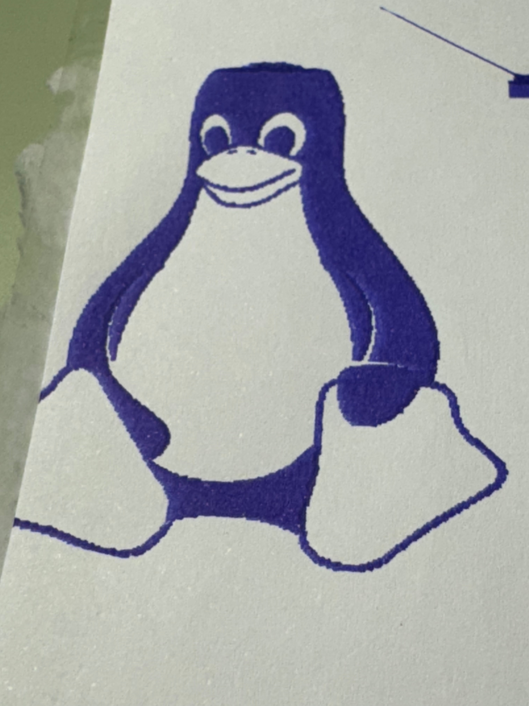

My first solution was to simply remove the printer's fan and attach the pen with duct tape.
Surprisingly, this didn't work. The friction between the pen and paper constantly moved the whole contraption, forcing me to recalibrate it (more on that later) on every run. If I also want to use my 3d printer for its indented purpose, I would need 5 minutes just to attach everything back together. To top it of my tape was of low quality that it couldn't manage to hold for more than a couple of minutes, so elastic bands had to be deployed to reinforce the structure.
I've never done any real work in a CAD program, but I decided it would be great to learn some and design some kind of bracket that can be placed on top of the hotend and hold the pen firmly. I tried OpenSCAD first and while it's programmery interface looks really cool, it quite hard to tune / measure your design. I downloaded Shapr3D next and made an initial prototype.

Sadly this was not the success I predicted it to be. I spent many hours trying to tweak all the dimentions but it was always either too small to fit at all or too large to be of any use. I added clips on the side. I added a hole to make the whole thing more flexible, but it never worked well. Anyways, at some point my brain decided I had struggled enough and showed me the correct approach.

This is way simpler, faster to print and has less room for error. I enjoyed the process of designing and optimizing this part quite a lot. It's a similar feeling to optimizing code. While I was at it, why not make a paperclip as well.

3d printers move by following a series of commands called gcode. Its quite simple and easily understood by humans generated by code. Modern firmwares like marlin support hundreds for commands and parameters, like controlling temperature, speed, calibration and anything you can imagine. But for this project just basic XYZ movement is enough. Here's an example:
; Go to those XYZ coordinates with a speed of 3000mm per minute. G0 X10 Y20 Z5 F3000 ; Lower the head - hover a bit above the bed. G0 Z0.3 ; Move 10mm in the Y direction while extruding 5mm of filament. ; Its customary to use G1 when you are actually extruding. G1 Y30 E5
Normally you would put this in a plain text file with .gcode extension, save in on a FAT formatted SD card and print directly from it. I don't want to do this every time test a new rendering algorithm, so instead I attached a microusb cable and connected to the printer over serial. In both MacOS and Linux this is trivial. All drivers and software needed come pre-installed. After connecting, a new TTY device should appear in your /dev/ directory (/dev/cu.usbserial-2110 on my machine). Then you can use screen/picoterm/open() to connect to it and read/write bytes.
screen is fine for pasting my gcode line by line and testing, but from python I use the excellent pyserial library.
gcode = "G0 X0 Y0 Z5" # The command I want to send.
import serial
serial.Serial('/dev/cu.usbserial-2110', baudrate=115200)
serial.write((gcode + '\n').encode('ascii'))
# If you are feeling fancy, you can wait for the printer to acknowledge it received the command.
while True:
line = self.device.readline()
print("<=: ", line)
if line == b'ok\n': break
When you tell the printer to go to Z=0 for example, it needs to know how many rotations (steps) should the Z stepper execute. In turn, this means that the machine needs to know where the head currently is. My printer has a probe on the head that can sense when it touches something. When the printer boots up, it lowers the head until the probe feels the hard bed underneath. The manufacturer (Creality in my case) has also told marlin what is the offset between the probe and the print nozzle. Luckily for us, the manufacturer cannot know this offset too precisely, so marlin has an option called "Z offset". We can abuse it so that Z=0 means the pen touches the paper, instead of the nozzle touches the bed. I made a little app with raylib that allows you to move the pen with your mouse and draw straight lines. This is an excellent way to test if the Z offset is correct.
def line_print(img, cx, cy, s):
line_start = None
for x in range(img.shape[1]):
for y in range(img.shape[0]):
# Detect line begin
if img[y,x] <= 128 and line_start is None:
line_start = (x, y)
# Detect line end
if img[y,x] > 128 and line_start is not None:
printer.move_to(cx+line_start[0]*s, cy+line_start[1]*s)
printer.move_to(z=0)
printer.move_to(cx+x*s, cy+y*s)
printer.move_to(z=1)
line_start = None
It takes quite a long time to execute all the commands, not to mention the visible pixelation.

btw i did that before finishing my v2 bracket and paperclip
I wanted to minimize the time the pen spent *not* drawing anything while also making images less pixilated. My first idea was to just plot the outermost contour of whatever I was drawing. This results one long continuous motion. After drawing it, I can remove it from the image and then draw the next outermost. The end result looks something like this.
def draw(img): todo = 255 - img preview = np.zeros((*todo.shape, 3), dtype=np.uint8) for i in range(100): # Find the outermost contours contours, _ = cv2.findContours(todo, cv2.RETR_TREE, cv2.CHAIN_APPROX_SIMPLE) # Remove the found contours from the todo image cv2.drawContours(todo, contours, -1, 0, 2) # Add the found contours to the preview image r, g, b = 255-i*150, 255-i*100, 255-i*50 cv2.drawContours(preview, contours, -1, (r % 255, g % 255, b % 255), 2)
This looks fine on this image, but let see how it performs on a block of text. It still jumps around a lot, because we don't enforce any kind of ordering between all the contours. So I decided to implement the following O(N²) sort:
ordered_contours = [inp_contours[-1]]
inp_contours.pop()
while len(inp_contours) > 0:
best_idx = 0
best_sc = float('inf')
lastx = ordered_contours[-1][-1,0,0]
lasty = ordered_contours[-1][-1,0,1]
for i in range(len(inp_contours)):
dx = inp_contours[i][0,0,0]-lastx
dy = inp_contours[i][0,0,1]-lasty
sc = dx**2 + dy**2
if sc < best_sc:
best_sc = sc
best_idx = i
ordered_contours.append(inp_contours[best_idx])
inp_contours[best_idx] = inp_contours[-1]
inp_contours.pop()
This can be optimized quite a lot, for example by chunking the space into tiles and first looking for input countours in the same tile. There are some fun spatial trees that can be fun to experiment with as well. Nevertheless, I don't think optimal solution can be found because this is practically the travelling salesman problem